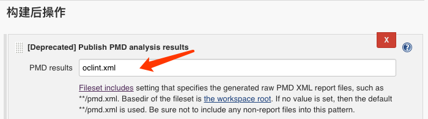

一图胜过千言万语，读者可以从下图中看到 PMD 的运行结果，再考虑是否有必要搭建服务，引入到项目组开发流程中。
可以看到 PMD 将 OCLint 的检测结果按不同的维度进行了归类，方便项目组成员查看警告信息。同时记录了警告的总数、新增、解决情况，可以为 Leader 提供代码质量参考数据。
前文有提到 PMD 是过期的插件，笔者曾尝试使用 SonarQube + sonar-objective-c，该方案更优秀，但是部署流程比较麻烦，笔者第一次运行以失败结束，出于时间成本考虑，决定先采用简单的 PMD 运行。读者如果要尝试 sonar-objective-c，注意它的升级版本 sonar-swift 也是支持 OC 的。
OCLint 配置
同上文，在服务器上安装好 OCLint，并配置好项目组约定的~/.oclint。
安装 Jenkins
Jenkins 是一个持续集成工具，可以用于自动化打包流程，解放开发人员提测试时的打包成本，本文只介绍 Jenkins 的安装和 PMD 插件的使用。
Jenkins 官网提供了 dmg 安装包，通过该安装包安装，会自动创建一个 Jenkins 的登录用户，不建议使用安装包安装，而使用 brew 安装。
安装 Jenkins
brew install jenkins |
运行 Jenkins，注意修改 jenkins 版本号为安装版本
java -jar /usr/local/Cellar/jenkins/2.49/libexec/jenkins.war --httpListenAddress=0.0.0.0 --httpPort=8080 |
目前 Jenkins 兼容 Java 8 ~ Java 11，如果安装失败或运行失败，检查一下本机的 Java 版本。
访问 Jenkins，打开浏览器，通过 http://localhost:8080/ 或 http://IP:8080/ 访问。第一次访问，根据提示输入 Jenkins 自动保存到本地的密码即可。
安装 PMD 插件
进入 Jenkins 主页 -> 系统管理 -> 插件管理 -> 可选插件 -> 搜索 PMD -> 直接安装 -> 重启 Jenkins
新建项目
创建项目
配置源码
可以根据实际情况配置 git 或 svn 账号，如果是公开项目，可以不配置账号。测试项目地址：https://github.com/CodingPub/OCSimpleDemo
添加构建 shell
脚本内容如下
注意修改 workspace_path 和 scheme_name，pod install 命令根据实际情况调整。注意 -report-type pmd -o oclint.xml 不同于上文提到的情况。
添加发布 shell

运行
保存项目配置后，回到项目首页，点击立即构建，等待运行结束后，可以看到最新运行结果 PMD Warnings 和 Build History：
如果没有提示运行失败，检查一下脚本是否有误。
点击 PMD Warnings 即可查看 OCLint 的检测报告：